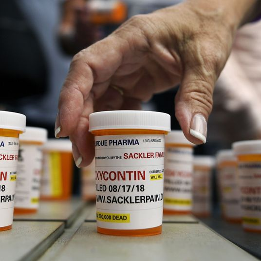

How Reliable Are COVID-19 Tests?
In late April, Justin Gilmore started feeling a little sluggish.When he mentioned his fatigue to his wife, she pointed out that he hadn’t been eating much lately.Gilmore and his family had been vigilant about isolating themselves in their small Philadelphia row house since early March, weeks before Pennsylvania governor Tom Wolf issued a stay-at-home order.Still, Gilmore worried he might have caught the virus on a rare trip to the grocery store, a fear that worsened when he developed a fever and a dry cough.
On May 2, Gilmore’s physician wrote him a prescription to get tested at a drive-through clinic, where a health-care worker stuck a long swab down his throat.The next day, a representative called with the result: negative.
'I wasn’t relieved because I knew it was inaccurate,' said Gilmore, a 42-year-old high-school tennis coach, music producer, and resident magician at Children’s Hospital of Philadelphia.'The representative hit me immediately with a disclaimer, ‘We do have to mention that there are some false negatives, so you may still have this and may want to get retested down the road a bit.’'By that point, Gilmore had developed chills and a fever that was peaking at 103 degrees.
'I thought maybe he’d tested too early,' said Dr.Louis Petrone, Gilmore’s primary care physician.'His symptoms were worsening.'
When Gilmore’s blood oxygen dipped below 90 a few days later, Petrone told him to go to the emergency room.Gilmore packed a bag and said good-bye to his family from a distance.'I thought I was going to die,' Gilmore said.'And I couldn’t even hug my wife and kids.'
Gilmore, who was otherwise healthy, spent the next seven nights at the Hospital of the University of Pennsylvania.He tested negative for the flu and a chest X-ray showed pneumonia in his lungs.He spent six days on oxygen.Over the course of his weeklong stay, Gilmore was tested two more times for coronavirus, both with nasal swabs.Both tests came back negative.Health-care workers seemed to shrug off the result, Gilmore said, telling him that the tests produced false negatives 30 percent of the time.It’s a figure that has circulated widely since it first appeared in a Chinese study, published in February, that evaluated different tests than the ones now being used at hospitals in the U.S.
'He 100 percent absolutely had coronavirus,' said a friend of Gilmore’s, an ICU nurse assigned to COVID-19 patients at a Philadelphia hospital.'It wasn’t just his external symptoms, but his internal blood work.There’s nothing else that it could have been.'(The Hospital of the University of Pennsylvania did not return requests for comment.)
Gilmore was given his own room away from other COVID-19 patients — in case he was, in fact, negative — but he was treated as if he had the disease.'You would be amazed at the number of different people who have told me similar stories while I was in there,' Gilmore said.'I had a nurse and a doctor separately telling me about two different cases in their hospital where people tested negative three times, and then tested positive on a fourth time.'Officially, Gilmore said, the hospital did not count him among its coronavirus numbers: 'When I finally left the hospital I asked if they counted me in their system as a COVID patient, and they said they didn’t, which is crazy to me.'
Gilmore’s experience, exhibiting all the symptoms of COVID-19 but never receiving a clear COVID-19 diagnosis, isn’t uncommon.As testing ramps up nationwide, so has concern over inconclusive test results.From Atlanta to El Paso, patients have been admitted to hospitals soon after testing negative for COVID-19.A 39-year-old COVID-19 patient near Los Angeles needed to be put on life support after testing negative even as he gasped for air in the emergency room.A man in San Francisco, who had been a passenger aboard the
Diamond Princess cruise ship, took more than a dozen tests, the results alternating between positive and negative.General confusion about the accuracy of COVID-19 tests has sowed skepticism even in the medical community.
'One of the local physicians here who takes care of a family member of mine called and said I absolutely refuse to utilize these tests because I don’t trust them,' said Dr. Timothy Schacker, vice dean for research at the University of Minnesota Medical School.'And I said, ‘Okay, here’s how this test was developed, here are the standards that were used, we have full authorization to use it, I don’t understand why you just trust this test,’ and he basically said it’s because of what he’s been reading.'
In March, Spain ordered 640,000 tests made in China only to discover the kits had a detection rate of 30 percent.In April, the U.K. canceled an order for 4 million kits from China after researchers at Oxford University found them to be inaccurate.In the U.S., skepticism spiked when NYU Langone Health released the results of a small, yet-to-be-peer-reviewed study that found Abbott Laboratories’s ID NOW, a rapid testing machine used in the White House and touted by the president at a Rose Garden press conference, may be wrong as much as 50 percent of the time.Abbott, which has used ID NOW to run nearly 2 million tests across the country, disputed NYU’s research and pointed to a University of Washington study that found the machines to be 91 percent accurate.
The Abbott ID NOW is 1 of more than 100 COVID-19 tests and treatments that the FDA has approved through an emergency-use authorization, which allows companies to forgo normally stringent regulations meant to test the standards and accuracies of new technologies.'There was a huge rush from the industry to be first to market with a test,' said Cassandra Kelly-Cirino, director of emerging threats at Foundation for Innovative New Diagnostics — or, FIND — a Geneva-based nonprofit that evaluates new diagnostic technologies.'Whether that test was good or not didn’t matter, they just wanted to be first to market.'
'There are a lot of examples out there where, because things are moving so fast and we’re building the plane as we go, mistakes are being made,' said Schacker.'When you’re in the middle of a pandemic, sciences are what you’ve got to use to get through it.You’ve got to do the randomized clinical trials.You have to use diagnostics that are rigorously evaluated and rigorously monitored and maintained, not the commercial kits that are made overnight and have a 50-50 chance of working.The president gets tested every day, but then we find out it’s by a device from Abbott that has some real problems.That’s what we’re up against.'
There are primarily two types of tests currently in use.The first are PCR, or molecular, tests, which diagnose active infections.PCR tests are used on the front lines of any 'test, trace, and isolate' strategy as they are essential to identifying people who are spreading the virus.These tests are usually administered by a health-care worker using throat or nose swabs, though last month the FDA approved a saliva test that can be self-administered at home.(A promising study by the Yale School of Public Health found saliva tests more reliable than deep nasal swab tests.)The second kind of tests are serology tests, which search for antibodies and may determine if a patient has ever had the virus.
The accuracy of any medical test is measured by two metrics: sensitivity and specificity.Sensitivity quantifies how accurately a test identifies positive patients.A sensitivity of 95 percent produces false negatives in 5 percent of patients — 5 out of every 100 patients who are positive test negative.Specificity is the inverse of sensitivity, determining how accurately a test identifies negatives.(These rates are often calculated by the manufacturers themselves, comparing their own tests against other manufacturers’ tests using the same samples.)
The first test Gilmore was given — a drive-through throat swab — was a PCR test manufactured by Swiss multinational Roche, one of the largest biotech companies in the world and one of the biggest suppliers of coronavirus tests to developed countries.The company’s website claims its test detects low levels of the virus with 95 percent sensitivity.According to FIND, one of a handful of organizations and agencies around the world that is evaluating tests, the best PCR tests are very accurate, with sensitivities ranging from 96 to 100 percent under ideal conditions.Large test manufacturers, like Roche, Abbott Laboratories, and Cepheid, all have PCR tests that achieve 100 percent sensitivity and specificity.
Experts generally agree that any variability in PCR results is most often attributed to human error, not the tests.'The confusion over the PCR tests has been because of sample collection,' Schacker said.'You get into some goofy stuff if you’re doing a nasopharyngeal swab and you don’t collect it correctly.There may not be virus there when the person might actually be infected or if you use the wrong kind of swab, you can screw up the result.'False negatives can arise when swabs don’t go deep enough or collect enough material or a test is taken too soon or too late.The first nasal swab Gilmore was given was administered by a health-care provider who swabbed for only a few seconds and the second by a doctor who counted to ten out loud.Researchers don’t yet know the degree to which human error may be whittling down accuracy, but at least one early study suggested PCR accuracy may range from 66 percent to 88 percent in the real world.
How accurate do PCR tests need to be?The answer depends on what the tests are intended to do.'It’s kind of a philosophical question,' said Dr.Michael Mina, assistant professor of epidemiology at Harvard’s T.H.Chan School of Public Health.'If you’re doing the test for clinical reasons, then you’re most concerned about finding people when they are transmitting the virus.'According to Mina, part of the public’s skepticism may stem from the expectation that all tests should recognize the virus, even in people who are not transmitting.'I think the Abbott ID NOW is actually probably a pretty good test,' said Mina.'Almost all of the cases it missed were probably in people who no longer had live virus or who at least were not transmitting because it was such an incredibly low viral count.'In other words, the differences between Abbott’s ID NOW and the gold standard may be clinically insignificant.
No medical test is perfect, but experts agree that most PCR tests being used by hospitals and drive-through clinics are good enough to be relied upon for diagnostic purposes.Any risk posed by a false negative is partly offset by the fact that testing isn’t the only tool health-care workers have to diagnose and treat patients.They can use chest scans to look for pneumonia in the lungs — as Gilmore’s doctors did — or identify any number of COVID-19 symptoms that, taken together, indicate a coronavirus diagnosis even when a test comes back negative.
As the conversation shifts, perhaps prematurely, from diagnostics to opening society, the focus has turned to antibody testing.With the promise of identifying nearly anyone who has been infected over the past few months, antibody testing will be critical to capturing the disease’s prevalence across the population, a number that is vital to evaluating risk as officials lift social-distancing measures.However, the Centers for Disease Control recently updated its guidelines to say that serological tests should not be used to inform public-health measures, warning that antibody tests could be wrong up to half of the time.The statistical reasoning behind that math is counterintuitive, given that the best antibody test kits being used are 95 to 99 percent specific.Tests producing so few false positives may sound promising, but any test’s efficacy is dependent upon its accuracy
and the prevalence of the disease in the population — the lower the prevalence, the greater the chance is that a test result will be wrong.For example, if only 5 percent of the country’s population has been infected over the past three months, a test kit that is 95 percent specific will produce five true positives and five false positives, meaning any result has only a 50 percent chance of being accurate.In that scenario, even a test with 99 percent specificity would produce false positives 17 percent of the time.
How will officials be able to capture the prevalence if the chances of a false positive are so high?The key may simply be backup testing.The test used to search for HIV antibodies is reliable, according to Mina, but because HIV prevalence is low in Boston, half of all positives may be false positives.'Even small numbers of false positives will distort our overall prevalence estimates, but it doesn’t mean those tests aren’t good,' said Mina.'We have a confirmatory test and if it confirms in both, then we think, okay, this is 99.999 percent true.'
Gilmore’s battle with COVID-19 didn’t end when he left the hospital.Two days after getting home, he started seeing colors and shapes fluttering in the corner of his eye, an effect he described as looking like the old schedule board at Penn Station.Gilmore texted his friend, the ICU nurse, who told him to get to the hospital immediately.Gilmore’s blood platelet count was more than double what it should have been and an ultrasound revealed a blood clot in his right arm.Recent studies have suggested that blood clots could occur in 20 to 30 percent of COVID-19 patients.After another night in the hospital, Gilmore was sent home, but not before he was given a fourth PCR test, a nose swab that came back negative.This time, Gilmore was expecting a negative result: The accuracy of both nose and throat swab tests have been shown to dramatically drop after day five of an infection.
So what explains the four negative PCR results in Gilmore’s case?Told about the medical odyssey, Mina suspected Gilmore’s infection was an unusual case in which the virus grew entirely in the patient’s gastrointestinal tract or deep in their lungs, avoiding detection from nose or throat swabs throughout the course of the illness.It’s a blind spot PCR tests don’t necessarily need to fill.The test, trace, isolate protocol being pursued by governors and local leaders is meant to stop transmission and, generally, someone who tests negative using a sensitive PCR test — or, in Gilmore’s case, four PCR tests — probably isn’t breathing out a lot of the virus.'That is the most important piece from a public-health standpoint,' Mina said.'The gold standard isn’t just the ability to capture any RNA, it’s the ability to capture clinically meaningful results.'
Posted On: 2020-06-10T00:00:00
Posted By: James D. Walsh

Content Date: 2020-06-10
Download Date: 2021-04-21
Document ID: L0C04APPZ